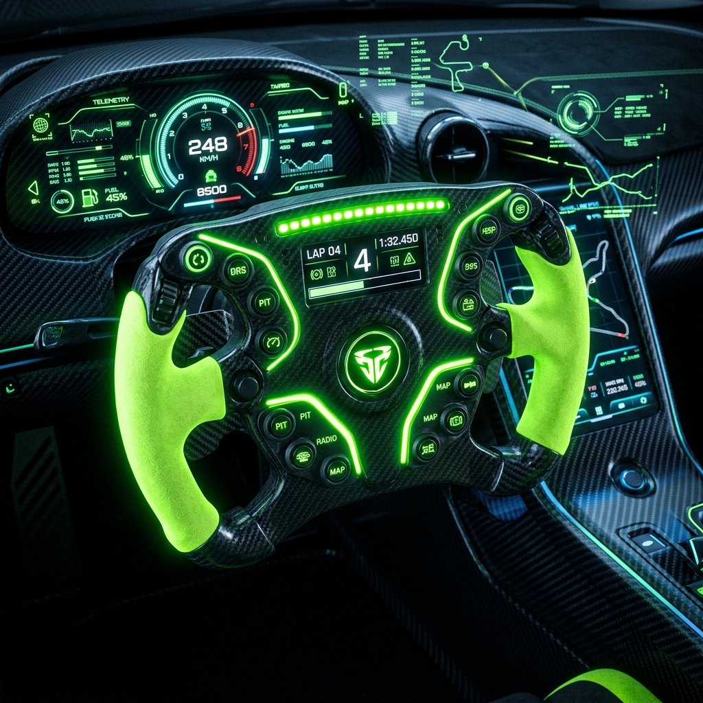

Version 1.0.3 is now live!
Transform Your
Smartphone Into A
Pro Controller.
Experience zero-latency wireless steering for Euro Truck Simulator 2. Connect effortlessly via Wi-Fi or USB and take the wheel like never before.

Latency
< 2ms
Connection
Auto-Sync
Why choose Steering ETS2?
Built from the ground up for simulation enthusiasts who demand precision and reliability without the premium price tag of hardware wheels.
Gyroscopic Precision
Utilizes advanced smartphone sensors to map your real-world rotations perfectly 1:1 in-game.
Lightning Fast
Optimized WebSocket and ADB architecture guarantees sub-millisecond data transmission.
Seamless Updates
Built-in auto-updaters for both PC and Android ensure you always have the latest features automatically.